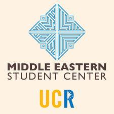
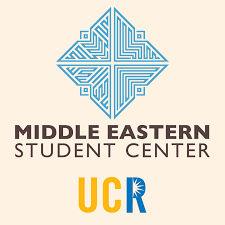
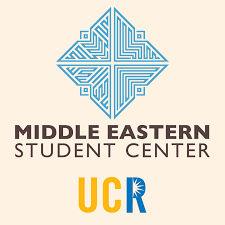

Hadi Hassanin
In the ever-evolving landscape of commerce and industry, the role of a business major serves as a dynamic force, navigating the intricacies of economics, strategy, and innovation. Born from a fascination with the interplay of markets and human behavior, my journey into the realm of business has been a voyage of discovery, growth, and relentless pursuit of knowledge.
From the outset, my curiosity for understanding the mechanics of business ignited during my formative years. As I delved into the realms of mathematics, economics, and psychology, I began to unravel the interconnected web of forces shaping global markets. It was this realization that fueled my decision to pursue a degree in business, with the aspiration of deciphering the complexities of the corporate world.
Throughout my academic journey, each course served as a building block, enriching my understanding of key concepts such as marketing, finance, management, and entrepreneurship. Whether analyzing case studies, participating in group projects, or engaging in spirited debates, every classroom experience provided invaluable insights into the multifaceted nature of business.
Beyond the confines of academia, I sought to augment my theoretical knowledge with practical experience. Internships offered a gateway into the real-world application of business principles, allowing me to witness firsthand the daily operations of companies spanning diverse industries. From startups to multinational corporations, each opportunity provided a unique vantage point, further honing my skills and broadening my perspective.
As I progressed through my studios, I embraced every challenge as an opportunity for growth. Whether grappling with complex financial models or crafting comprehensive marketing strategies, I thrived in environments that demanded critical thinking, creativity, and adaptability. Moreover, collaborating with peers from diverse backgrounds fostered a spirit of innovation, as we collectively sought to tackle industry-specific challenges and unearth novel solutions.
In parallel with my academic pursuits, I actively immersed myself in extracurricular activities that complemented my passion for business. Joining student organizations, such as business clubs and entrepreneurial societies, provided a platform for networking, mentorship, and skill development. Moreover, participating in competitions and conferences enabled me to showcase my talents on a broader stage, while forging lasting connections within the professional community.
Beyond the confines of the campus, I remained steadfast in my commitment to lifelong learning. Whether attending workshops, seminars, or pursuing certifications, I embraced opportunities to stay abreast of emerging trends and best practices in the ever-evolving landscape of business. Moreover, engaging with thought leaders through literature, podcasts, and online forums served as a source of inspiration, continuously fueling my passion for innovation and excellence.
Looking ahead, I am excited to embark on the next chapter of my journey with unwavering determination and enthusiasm. Armed with a solid foundation in business theory, coupled with hands-on experience and a relentless pursuit of excellence, I am prepared to make a meaningful impact in the corporate world. Whether charting new business ventures, driving organizational growth, or shaping industry trends, I am committed to leveraging my skills and knowledge to effect positive change and propel businesses to new heights of success.
In essence, my journey as a business major embodies a relentless pursuit of knowledge, a commitment to excellence, and a passion for innovation. With each step forward, I remain steadfast in my belief that the world of business is not merely a field of study, but a realm of endless possibilities waiting to be explored and conquered.
Embarking on the labyrinthine journey of business studies, I found myself entranced by the enigmatic dance of supply and demand, the strategic maneuvers of market players, and the ever-shifting landscape of global economics. Born from a desire to decode the secrets of enterprise and innovation, my path as a business major has been a voyage of self-discovery, intellectual growth, and relentless pursuit of excellence.
My odyssey into the realm of business began with a fervent curiosity and an insatiable appetite for knowledge. From the seminal texts of economic theory to the intricate frameworks of financial analysis, I delved deep into the foundations of commerce, eager to unravel its mysteries. Each lesson, each lecture, became a thread in the tapestry of my understanding, weaving together concepts of management, marketing, finance, and beyond.
Yet, it was not merely within the confines of the classroom that I found my education flourishing. Embracing the ethos of experiential learning, I sought out internships, co-op programs, and volunteer opportunities that offered me a glimpse into the real-world intricacies of business operations. From bustling boardrooms to the humble offices of startups, I immersed myself in the day-to-day challenges and triumphs of industry, gaining invaluable insights and honing my practical skills along the way.
As I navigated through the myriad courses and co-curricular activities, I found myself drawn to the nexus of innovation and entrepreneurship. Fuelled by a spirit of creativity and a drive to enact positive change, I eagerly seized every opportunity to collaborate with like-minded peers, whether through business plan competitions, hackathons, or incubator programs. Together, we dared to dream, to innovate, and to transform nascent ideas into tangible ventures poised to disrupt the status quo.
Yet, my journey as a business major was not without its trials and tribulations. From the crucible of failure emerged lessons of resilience, adaptability, and perseverance. Whether grappling with complex financial models, navigating ethical dilemmas, or confronting the harsh realities of market dynamics, I met each challenge head-on, fortified by the unwavering belief that adversity is but a stepping stone on the path to success.
As I stand on the cusp of graduation, poised to embark on the next chapter of my journey, I carry with me the lessons of the past and the aspirations of the future. Armed with a diverse skill set, a global perspective, and an insatiable thirst for knowledge, I am ready to make my mark on the world of business. Whether as a visionary entrepreneur, a strategic innovator, or a compassionate leader, I am committed to leveraging my talents and expertise to drive positive change and foster sustainable growth in an ever-evolving landscape.
In the grand tapestry of commerce, my role as a business major is but a single thread, yet it is a thread woven with purpose, passion, and unwavering determination. As I set sail into the vast expanse of the business world, I do so with humility, gratitude, and an unyielding resolve to leave an indelible mark on the fabric of enterprise.
In the crucible of commerce, where ideas become innovations and transactions shape economies, I found my calling as a business major. Driven by a relentless curiosity and a passion for problem-solving, my journey through the intricate world of business has been a tapestry woven with diverse experiences, transformative learning, and boundless opportunities.
From the outset, I was captivated by the alchemy of business—the art of transforming abstract concepts into tangible outcomes. As I delved into the realms of economics, management, marketing, and beyond, I marveled at the intricate interplay of factors that govern the dynamics of markets and organizations. Each lesson, each case study, became a piece of the puzzle, illuminating the multifaceted nature of commerce and instilling in me a deep-seated appreciation for the complexities of the business landscape.
Yet, it was not enough to merely grasp theoretical concepts; I yearned to see them come to life in the real world. Embracing the ethos of experiential learning, I sought out internships, co-op placements, and volunteer opportunities that allowed me to immerse myself in the daily operations of businesses across various sectors. From the bustling floors of financial institutions to the innovative hubs of tech startups, I gained firsthand insights into the nuances of strategy, operations, and customer relations, refining my skills and expanding my horizons with each new experience.
As I progressed through my studies, I became increasingly drawn to the intersection of business and technology—a realm where innovation thrives and boundaries are constantly pushed. Courses in data analytics, digital marketing, and strategic management fueled my passion for leveraging cutting-edge tools and methodologies to drive business growth and transformation. Equipped with a diverse skill set and a forward-thinking mindset, I eagerly embraced opportunities to collaborate on projects that blended business acumen with technological innovation, from developing e-commerce platforms to crafting data-driven marketing campaigns.
Yet, amidst the pursuit of academic excellence and professional development, I remained grounded in the values that have guided me throughout my journey—integrity, empathy, and a commitment to making a positive impact. Whether volunteering in community outreach programs, mentoring aspiring entrepreneurs, or championing sustainability initiatives, I sought to embody the principles of ethical leadership and social responsibility in all my endeavors, recognizing that true success is measured not only by financial metrics but also by the positive change we effect in the world around us.
As I stand on the precipice of graduation, poised to embark on the next chapter of my journey, I do so with a profound sense of purpose and gratitude. Armed with a wealth of knowledge, a breadth of experience, and an unwavering belief in the power of innovation, I am ready to step boldly into the ever-evolving landscape of business, confident in my ability to navigate challenges, seize opportunities, and craft success wherever my path may lead.
In the grand tapestry of commerce, I see myself not as a mere observer, but as an active participant—a business alchemist, poised to harness the forces of change and transform vision into reality. As I venture forth, I carry with me the lessons of the past, the aspirations of the future, and a steadfast commitment to realizing the boundless potential of business as a force for good in the world.
Experience
Coffee Shop Volunteer
• Ran events helping the business
• Worked front desk making sure everyone was checked in
Education
UC Riverside
Portfolio

 

